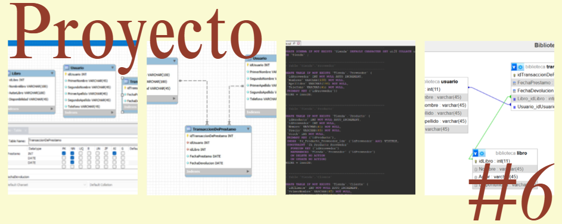
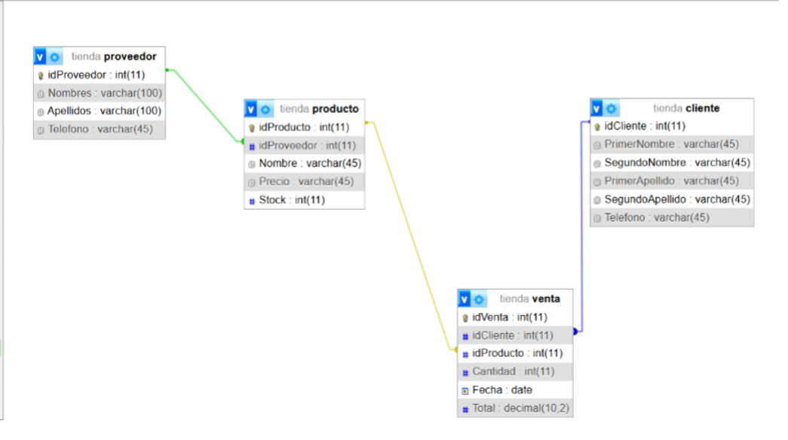

Proyecto parcial - Bases de Datos
Este proyecto consiste en analizar varios casos los cuales son biblioteca, tienda y red social, para diseñar y crear bases de datos, donde se deben elaborar diagramas entidad-relación en MySQL Workbench, generar los scripts correspondientes, implementar las bases de datos y tablas en phpMyAdmin, visualizar los diagramas, insertar registros de prueba y finalmente documentar todo el proceso con capturas de pantalla en un archivo PDF, incluyendo también los archivos generados y sus enlaces en Drive
El objetivo es Analizar y diseñar diferentes sistemas de bases de datos mediante diagramas entidad-relación, generación de scripts y creación de tablas en PHPMyAdmin, con el fin de comprender la estructura y funcionamiento de bases de datos aplicadas a distintos escenarios.
En este proyecto trabajé de forma individual realizando el análisis de diferentes casos relacionados con una biblioteca, una tienda y una red social. Primero identifiqué las entidades, actores y procesos principales de cada ejercicio para elaborar los diagramas entidad-relación en MySQL Workbench.
Después generé los scripts de base de datos y utilicé PHPMyAdmin para crear las bases de datos y sus respectivas tablas. Luego visualicé los diagramas ER desde el diseñador de PHPMyAdmin para comprobar las relaciones entre las entidades y asegurar que la estructura estuviera correctamente configurada.
Posteriormente inserté tres registros en cada tabla para verificar el funcionamiento de las bases de datos y comprobar que las relaciones entre tablas funcionaran correctamente. Finalmente documenté todo el proceso mediante capturas de pantalla y organicé los archivos generados junto con el documento PDF solicitado para la entrega del proyecto.

